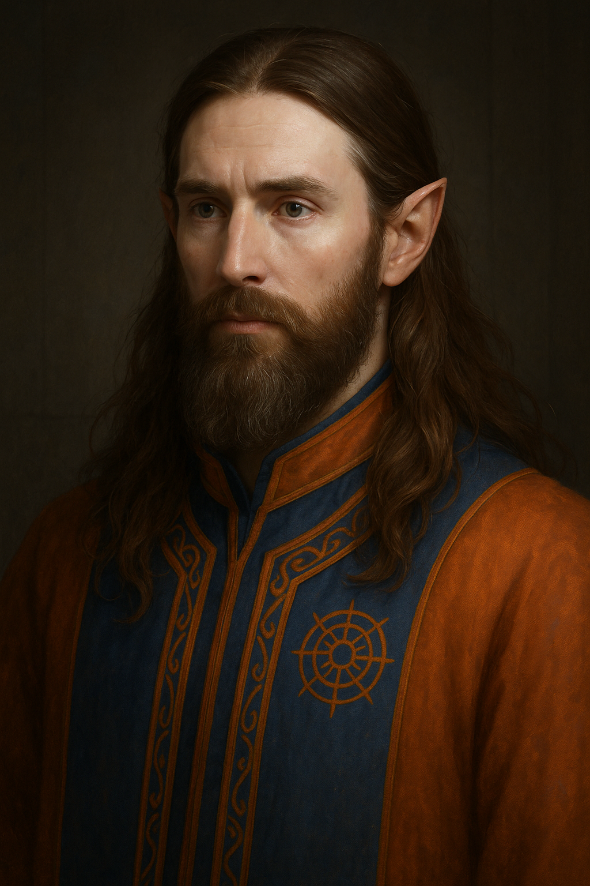
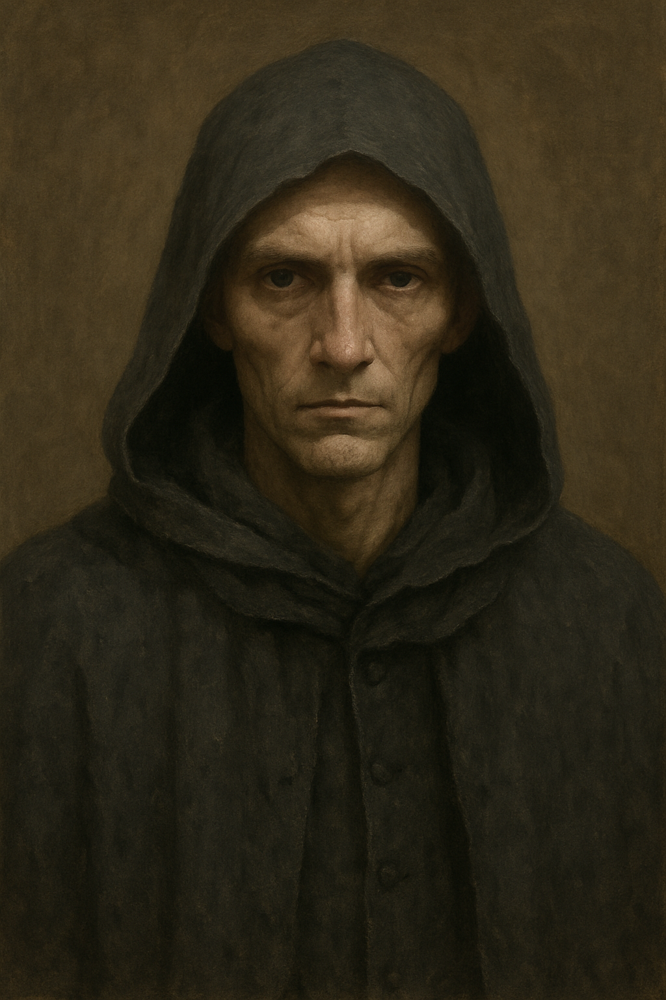

Hochmagus Christon Imwaleth
Lehrender Hochmagus am Sanctum der Funkenwacht. Ein Magier mit Erfahrung – und Fragen, die ihn nicht loslassen.
Figuren & Entwürfe
Erste Einblicke in einige der Figuren aus „Sanctum der Funkenwacht“.

Lehrender Hochmagus am Sanctum der Funkenwacht. Ein Magier mit Erfahrung – und Fragen, die ihn nicht loslassen.
Ein Bauernjunge, der an seinen Träumen festhält. Noch ahnt er nicht, wie sehr diese ihn verändern werden.

Der wohl mysteriöseste Mensch aus Inaka. Kaum jemand kennt seine Herkunft – oder seine wahren Ziele.